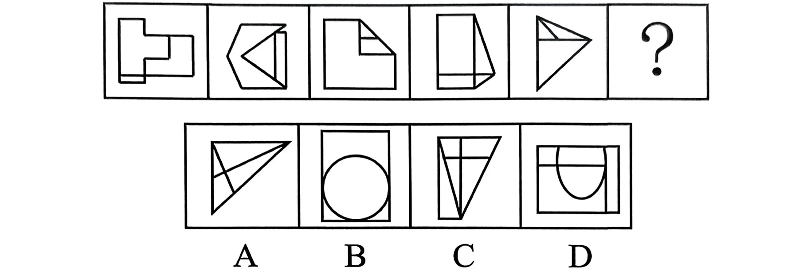
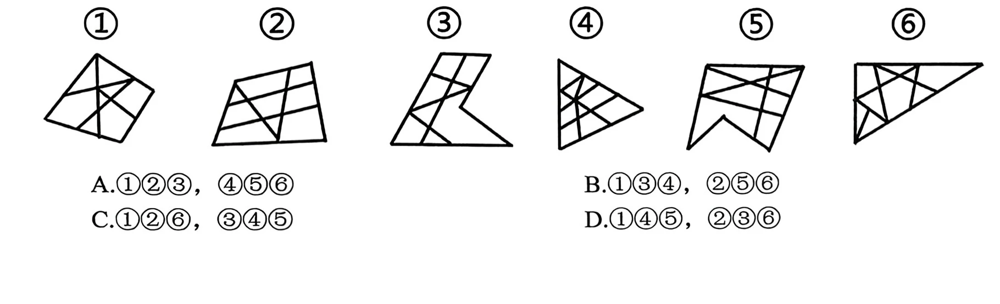
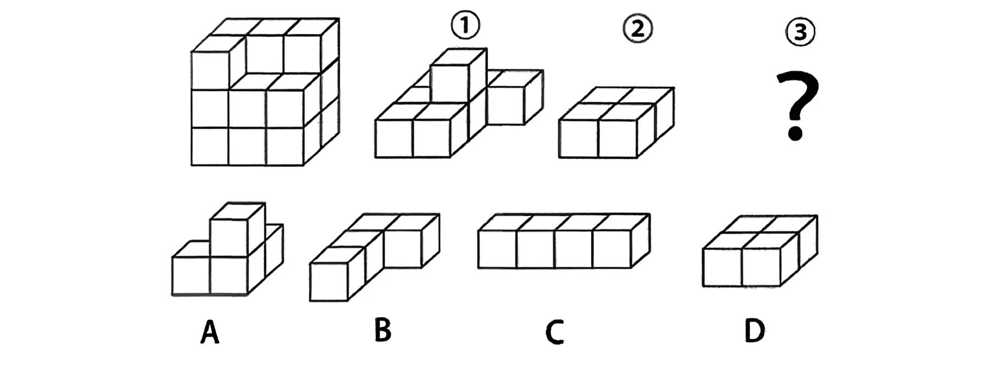
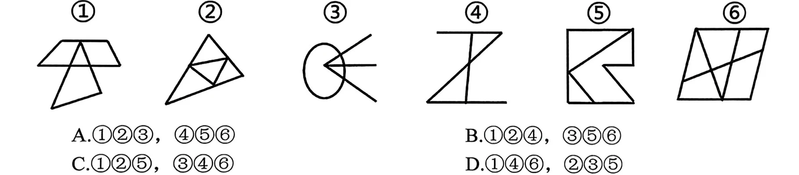

党的十八大以来，习近平总书记多次强调要有“历史耐心”。改革是久久为功的伟大事业，保持历史耐心便要有“功成不必在我，功成必定有我”的胸怀信念，“守得云开见月明”的思想准备，“板凳坐得十年冷”的实践韧劲，“轻舟已过万重山”的从容自得。关于“历史耐心”的重要论述，下列理解准确的是（）。
①坚持量变和质变的辩证统一，量变是质变的先决性前提和现实基础，没有一定的量的积累，质变不可能发生
②坚持战略和策略的辩证统一，长远的战略需要灵活的策略才能最终实现，没有策略的战略必将沦为纸上谈兵
③坚持理论和实践的辩证统一，历史规律是自然形成的，不受人的社会实践影响，实践中要不局限于一时一事一域一段
④坚持遵循历史运动规律和发挥历史主动性的辩证统一，遵循历史运动规律和发挥历史主动性是同一个历史过程的两个方面
A.①②③ B.①②④ C.①③④ D.②③④
怎样才能当好县委书记？焦裕禄同志为县委书记树立了榜样。做县委书记，就要做焦裕禄式的县委书记。下列说法正确的有（）。
①在我们党的组织结构和国家政权结构中，县一级处在承上启下的关键环节
②廉洁自律是共产党人为官从政的底线
③县委书记要坚决搞好“政绩工程”
④县委是我们党执政兴国的“一线指挥部”，县委书记就是“一线总指挥”
A.4 项 B.3 项 C.2 项 D.1 项
2026年7月8日，2025年度国家最高科学技术奖揭晓，（）获国家最高科学技术奖。
A.陈立泉院士、贲德院士
B.陈立泉院士、王选院士
C.李德仁院士、贲德院士
D.李德仁院士、王选院士
关于哲学的基本问题，下列说法正确的有（）。
A.哲学的基本问题是物质和存在的关系问题
B.哲学基本问题的第二方面是何者为第一性问题
C.哲学基本问题的第一方面划分了哲学的派别，是最重要的方面
D.根据何者为第一性区分了可知论和不可知论
习近平经济思想彰显了马克思主义哲学的坚定立场和科学方法，下列经济思想与其彰显的马克思主义哲学对应正确的是（）。
①努力构建新发展格局—内因与外因关系
②推动经济高质量发展—量变和质变关系
③坚持以人民为中心的发展思想一一人民历史主体地位
④处理好政府和市场关系——主要矛盾和次要矛盾关系
⑤坚持系统观念解决发展不平衡不充分问题——否定之否定
A.4 项 B.3 项 C.2 项 D.1 项
党的二十大报告系统阐明习近平新时代中国特色社会主义思想的世界观和方法论，有力彰显了我们党推进马克思主义中国化时代化的理论品格。下列关于党的二十大报告的相关论述，说法错误的是（）。
A.马克思主义是我们立党立国、兴党兴国的根本指导思想
B.全过程人民民主是全面建设社会主义现代化国家的首要任务
C.深入实施人才强国战略，培养造就大批德才兼备的高素质人才，是国家和民族长远发展大计
D.推动经济社会发展绿色化、低碳化是实现高质量发展的关键环节
习近平新时代中国特色社会主义思想的核心要义是（）。
A.全面从严治党
B.经济社会高质量发展
C.坚持和发展中国特色社会主义
D.实现中华民族伟大复兴
行政处罚法规定了行政机关及其执法人员的权利义务，下列有关说法不正确的是
A.执法人员有权要求当事人如实回答询问并协助调查或检查
B.行政机关在收集证据时，可以抽样取证
C.执法人员不得少于五人
D.行政机关在收集证据时，可以实行先行登记保存制度
王先生在4S店购买了一辆轿车，半年后去该店保养，工作人员告知王先生该车气囊电脑存在故障，需付费更换。王先生认为此为产品质量问题，要求4S店免费更换，4S店认为是王某使用不当所致。经查，该车气囊电脑不符合产品说明所述质量。对此，下列说法正确的是（）。
A.王先生有权请求4S店承担产品侵权责任
B.王先生有权请求4S店承担违约责任
C.4S店和该车生产商应当连带承担产品侵权责任
D.王先生只能请求该车生产商承担免费更换责任
利率的下降将（）。
A.主要会减少投资，因为这将会降低投资项目未来收益的现值
B.主要会减少投资，因为这将会提高今期建造项目成本的现值
C.主要会增加投资，因为这将会提高投资项目未来收益的现值
D.主要会增加投资，因为这将会降低今期建造成本的现值
按时间先后顺序，对中国共产党的以下重大决策或论断进行排序正确的一项是
①确定把党的工作重点转向社会主义建设
②党的工作重心由乡村移到了城市
③我国社会主要矛盾已经转化为人民日益增长的美好生活需要和不平衡不充分发展之间的矛盾
④把全党工作的重点和全国人民的注意力转移到社会主义现代化建设上来
A.②①④③ B.①③②④ C.②①③④ D.①②④③
在传统以艺术为中心的美育制度中，为了更好地将审美经验与日常经验进行，一般都是将艺术欣赏活动置于美术馆、音乐厅、博物馆等特定场所来进行。在这种艺术美育中，欣赏者需要摆脱功利性日常经验的 ，以审美静观的态度去自由地欣赏艺术。填入画横线部分最恰当的一项是：
A.区分羁绊 B.识别 禁锢
C.剥离支配 D.融汇牵绊
当地充分利用农耕梯田、红瑶文化和自然风光发展乡村旅游，同时，以旅游收入反哺古民居、古建筑保护，实施梯田景观 。厚重的红瑶民族文化、壮丽的梯田风光 、相得益彰，彰显了中国传统农耕文明中因地制宜、天人合一的智慧。填入画横线部分最恰当的一项是：
A.重建 相辅相成 B.修护 水乳交融
C.维护相映成趣 D.修复 交相辉映
小说与影视剧之间具有 ，它们都属于叙事艺术，都有一定的故事性。这为两者的转化提供了 的条件。因此，改编小说始终是影视剧制作的一个重要路径。影视创作者首先瞄准的是一些经典的小说，它们经过时间和读者的检验，有广泛的 ，这为改编提供了优质的剧本基础，也对影视剧起到了天然的宣传作用。填入画横线部分最恰当的一项是：
A.关联性 优越 认可度
B.亲缘性 便利 知名度
C.交融性 有利 影响力
D.相通性 合适 凝聚力
针对无人机集群，要注意结合空间配置实施频谱管理，使各频段雷达和传感器不发生互扰的同时，能够在复杂的电磁环境中探测、识别各类无人机集群目标。另外，还要通过网络实现无人机集群探测预警信息的高度共享，融合、集成战场环境信息和敌我态势信息以及规划命令等多个数据源获取的信息，在地理信息基础上叠加敌、我、友及中立部队的位置和运动轨迹，以及反无人机集群的设施或武器装备的有效控制区域等信息，形成无人机集群探测的综合态势图，为优先打击最有价值的无人机集群目标提供支撑。这段文字意在说明：
A.实施频谱管理能够识别无人机集群目标
B.可通过融合信息形成无人机集群态势图
C.如何精确化识别和锁定无人机集群目标
D.应从多方面着手去打击无人机集群目标
达尔文注意到，自然选择理论无法解释雄孔雀的尾巴、雄鹿的鹿角，以及为什么对有的物种来说其雄性比雌性要大得多等问题。于是他提出：物种会对能增加其获得交配和繁殖机会的性状进行性选择。他认为，性选择性状可以通过性比的不平衡来解释。当一个物种的雄性可选择的雌性数量较少时，它们将不得不更加努力地从这些少量的异性中去锁定一个作为配偶， 。后来的研究发现，性选择和性比之间的确存在一种联系，但性选择最为明显的时候并不发生在潜在配偶数量稀少时，而是在潜在配偶数量充足时。填入画横线部分最恰当的一项是：
A.而这种竞争推动了性选择
B.不过它们的选择非常有限
C.而性选择加剧了雄性间的竞争
D.此时性选择性状表现最为明显
新的研究不断证明，人工智能模型在精神疾病的预测诊断、干预治疗等方面都表现出优于传统诊疗模式的潜力。脑电、心电、肌电等电生理信号都与人的精神状态相关，目前的采集技术已经能够实现“降噪”采集。甚至鼾声、微表情、步态等人类感官难以察觉规律或精准捕捉的行为信号都可以用作人工智能判读精神健康的依据。信息技术让很多之前难以探测到的“蛛丝马迹”，可以被甄别、掌握，高效利用。除此之外，人工智能在治疗方面也有独特优势。医生治疗时需实时得到反馈才能及时调整治疗方案，人工智能辅助诊断技术提供的及时诊疗“反馈”，能够提升医生对症施治的效果。下列说法与原文不符的是：
A.在精神疾病诊疗上人工智能比传统诊疗模式或更有优势
B.电生理信号与行为信号都可帮助人工智能判断精神健康状况
C.医生可以根据人工智能提供的实时反馈来修改治疗方案
D.信息技术对精神疾病诊疗最大帮助在于可微观探测行为信号
藤壶会分泌出一种具备粘性的藤壶胶，这种胶主要由多种蛋白质成分组成，具有极强的粘合力和防水能力。藤壶胶的强粘合性使藤壶不仅能牢固地附着在礁石、船体上，还能附着在其他生物表面，如红树、贻贝外壳等。藤壶胶是藤壶腺介幼虫及其成体与基底材料表面黏附的主要物质。人们通常把藤壶个体在正常生长发育过程中所分泌的胶黏物称为初生胶，而已附着的藤壶成体在修复自身破损结构时所分泌的胶质称为次生胶。藤壶胶与多种基材表面黏接后都能呈现较大的内聚强度，且其具有非常优异的抗生物降解性。藤壶胶是一种极具开发价值的生物粘合剂。关于藤壶胶，这段文字未提及：
A.产生过程 B.应用前景 C.优势性能 D.主要成分
我国经济已转向高质量发展阶段，经济社会发展必须以推动高质量发展为主题。推动高质量发展需要统筹发展和安全，安全是发展的前提，发展是安全的保障。统筹发展和安全，增强忧患意识，做到居安思危，是我们党治国理政的一个重大原则。党的十八大以来，以习近平同志为核心的党中央坚持总体国家安全观，从容应对国内外形势的深刻复杂变化，着力破解各种矛盾和问题，发展的安全保障能力持续提升。新征程上，世界百年未有之大变局加速演进，我国发展面临的环境更加复杂严峻，必须坚持底线思维，推进国家安全体系和能力现代化建设，有效防范化解各类风险挑战，实现高质量发展和高水平安全的良性互动，确保全面建设社会主义现代化国家顺利推进。这段文字意在强调：
A.实现高质量发展需要秉持基本的底线思维
B.推动高质量发展须坚持统筹好发展和安全
C.贯彻国家安全观有助于现代化的稳步推进
D.在新征程上更应该提高国家安全保障能力
池中原有一定量的水，如果用一台抽水机向池内灌水，6小时可灌至半满；如用3台抽水机灌水，8小时可灌满。如将池中水排空，用4台抽水机灌水几小时能灌满？
A.6 B.7 C.8 D.9
2014 年父亲、母亲的年龄之和是年龄之差的23 倍，年龄之差是儿子年龄的，5年后母亲和儿子的年龄都是平方数。若父亲的年龄比母亲大，则2014年父亲的年龄是多少？（年龄都按整数计算）
A.36岁 B.40岁 C.44岁 D.48岁
王大妈与李大妈两人分别从小区外围环形道路上A、B两点同时出发相向而行。走了5分钟两人第一次相遇，接着走了4分钟后，李大妈经过A点继续前行，又过了26分钟两人第二次相遇。问：李大妈沿小区外围道路走一圈需要几分钟？
A.54 B.59 C.60 D.63
一条街上有90棵树，其中有些树已经挂上了彩灯，这时，要选择在一棵未挂彩灯的树上悬挂红旗，有趣的是，无论将红旗挂在哪棵树上都与挂了彩灯的树相邻，那么至少有多少棵树挂了彩灯？
A.35 B.30 C.25 D.20
小李和小张参加七局四胜的飞镖比赛，两人水平相当，每局赢的概率都是 50%，如果小李已经赢2局，小张已经赢1局，最终小李获胜的概率是：
A. B. C. D.
某社区拟对一块梯形活动场地进行扩建。经测算，如果将梯形的上底边增加1米，下底边增加1米，则面积将扩大10平方米；如果将梯形的上底边增加1倍，下底边增加1米，则面积将扩大55平方米；如果将上底边增加1米，下底边增加1倍，
则面积将扩大105平方米。现拟将梯形的上底边增加1倍还多2米，下底边增加3倍还多4米，则面积将扩大：
A.280 平方米 B.380 平方米
C.420 平方米 D.480 平方米
某一年中有53个星期二，并且当年的元旦不是星期二，那么下一年的最后一天是：
A.星期三 B.星期二
C.星期一 D.星期四
一款手机有两个型号，存储容量分别为64G 和256G，销售价分别为每台1600元和2000元，其他无区别。已知64G存储器的成本是256G存储器的一半，是单台手机其他成本之和的 20%，而销售一台 256G 手机的利润比 64G 手机高 150 元。问：销售64G和256G手机各10万台，利润为多少万元？
A.3500 B.5600 C.6400 D.7000
从所给四个选项中，选择最合适的一个填入问号处，使之呈现一定规律性：

从所给四个选项中，选择最合适的一个填入问号处，使之呈现一定规律性：

把下面的六个图形分为两类，使每一类都有各自的共同特征或规律，分类正确的一项是：

A.①②③，④⑤⑥ B.①③④，②⑤⑥
C.①②⑥，③④⑤ D.①④⑤，②③⑥
把下面的六个图形分为两类，使每一类都有各自的共同特征或规律，分类正确的一项是：

A.①②③，④⑤⑥ B.①③⑥，②④⑤
C.①③④，②⑤⑥ D.①④⑤，②③⑥
左边的立体图形是由①、②和③组成的，下列哪项可以填入问号处：

行政给付又称行政物质帮助，是指行政机关对公民在年老、疾病或丧失劳动能力等情况或其他特殊情况下，依照有关法律、法规、规章或政策等规定，赋予其一定的物质权益（如金钱或实物）或与物质有关的权益的具体行政行为。根据上述定义，下列不属于行政给付的是：
A.给养老院经费资助
B.支付残疾人摩托司机行政赔偿金
C.支付下岗职工最低生活保障费
D.支付牺牲人员抚恤金
差异容忍指的是对于所属群体个别成员的与众不同常常给予善意的理解；卓越排斥指的是对于非已群体成员的优秀表现常常给予恶意的理解。根据上述定义，以下哪项属于差异容忍？
A.小陈年纪轻轻几乎两年升职一次，尽管他非常优秀，但是比他优秀的人多的是，他一定背后有人，否则怎么总是提拔他
B.小赵这次发挥失常，致使在这次预赛中我们团队未能进入前5名，不过，这对于我们团队也是好事，免得训练时被其他队盯上
C.小王这次捐款比科室其他成员少得多，可见他近期一定在经济上遇到了些困难
D.她在去年四个季度的绩效评比中全都是第一，还不就是为了出风头，我倒要看看她能坚持多久
禀褒效应：是指当个体一旦拥有某项物品、奖励或者荣誉之后，那么他对该物品、奖励或者荣誉的价值评价要比未拥有之前明显提高。下列属于禀褒效应的是：
A.小李花了150万元买了一套精装修的房屋，尽管小区房价在降，但他觉得自己的房子结构合理、聚气，交通方便，至少值200万元
B.小唐经过精心挑选购买了4支基金，但是自从他买后，这几支基金在很长一段时间不停地下跌，而他坚信这些基金一定会大涨获得超值回报
C.小王的同学赵某的论文在某次国际会议上获奖，小王逢人便说，这个国际会议奖项的国际认可度极高，能够获得该奖非常不容易
D.由于工作成绩突出，公司奖励给小陈价值10万元的一块定制金表，同事愿意出价15万元收藏，但是小陈毫不犹豫地拒绝了
阳光：取暖器
A.蜡烛：手电 B.水笔：铅笔
C.清风：风扇 D.老鼠：鼠标
毛线：毛衣：保暖
A.面粉：蛋糕：庆祝 B.扇子：蚊香：驱蚊
C.玻璃：墨镜：避光 D.纸张：窗花：装饰
扉页：封面：书籍：杂志
A.主板：屏幕：手机：电脑
B.螺纹：螺柱：螺栓：螺母
C.硅胶：金属：锅铲：炒勺
D.眼睛：鼻子：身体：人体
今天的教育质量将决定明天的经济实力。PISA 是经济合作与发展组织每隔三年对15岁学生的阅读、数学和科学能力进行的一项测试。根据2022年测试结果，中国学生的总体表现远超其他国家学生。有专家认为，该结果意味着中国有一支优秀的后备力量以保障未来经济的发展。以下哪项如果为真，最能支持上述专家的论证？
A.中国学生在15岁时各项能力尚处于上升期，他们未来会有更出色的表现
B.未来经济发展的核心驱动力是创新，中国教育非常重视学生创新能力的培养
C.在其他国际智力测试中，亚洲学生总体成绩最好，而中国学生又是亚洲最好的
D.这次PISA测试的评估重点是阅读能力，能很好地反映学生的受教育质量
某部门抽检了肉制品、白酒、乳制品、干果、蔬菜、水产品、饮料等7类商品共521种样品，发现其中合格样品515种，不合格样品6种，已知：
（1）蔬菜、白酒中共有2种不合格样品；
（2）肉制品、白酒、蔬菜、水产品中共有5种不合格样品；
（3）蔬菜、乳制品、干果中共有3种不合格样品。根据上述信息，可以得出以下哪项？
A.乳制品中没有不合格样品 B.肉制品中没有不合格样品
C.蔬菜中没有不合格样品 D.白酒中没有不合格样品
2019年全国规模以上食品工业企业营业收入81186.8亿元，同比增长4.2%，比上半年多41875.4亿元；利润总额 5774.6亿元，同比增长7.8%，比上半年多3064.5亿元。其中，农副食品加工业营业收入46810.0亿元，同比增长4.0%，占全国57.7%，较上半年农副食品加工业营业收入占全国的比重多0.5个百分点；利润总额1887.6亿元，同比增长 3.9%。食品制造业营业收入19074.1 亿元，同比增长4.2%，占全国23.5%，较上半年的比重多0.4个百分点；利润总额1670.4亿元，同比增长9.1%。酒、饮料和精制茶制造业营业收入15302.7亿元，同比增长5.0%；利润总额2216.6 亿元，同比增长10.2%。2018年上半年，规模以上食品工业企业实现利润总额2870.7亿元，同比增长10.2%，增幅低于全部工业7个百分点，高于上年同期0.6个百分点。其中，农副食品加工业实现利润 1046.1 亿元，同比增长 2.2%；食品制造业实现利润 754.4 亿元，同比增长 5.4%；酒、饮料和精制茶制造业实现利润1070.2亿元，同比增长 23.6%。
2019年上半年，全国规模以上食品工业企业利润总额比上年同期约：
A.减少1.1% B.减少5.6%
C.增加1.1% D.增加5.6%
2018年下半年，全国规模以上食品制造业利润总额环比增加了：
A.不到50 亿元 B.50 亿~100 亿元
C.100 亿~150 亿元 D.超过 150 亿元
2019年下半年，酒、饮料和精制茶制造业营业收入占全国规模以上食品工业企业营业收入的比重最接近以下哪个数字？
A.18% B.23% C.43% D.58%
2020年1月，全国共销售彩票272.1亿元，同比下降43.3%。其中，乐透数字型、竞猜型、视频型、基诺型彩票销量分别下降39.9%、58.5%、40.6%、7.8%，只有即开型彩票销量同比增加27.1%。
图 1 2020 年 1 月全国彩票市场份额图（数值据原图核对）
| 彩票类型 | 市场份额 |
|---|---|
| 乐透数字型 | 54.9% |
| 竞猜型 | 25.0% |
| 视频型 | 9.8% |
| 即开型 | 10.2% |
| 基诺型 | 0.1% |
图 2 2020 年 1 月全国彩票销量与上年同期比较图（单位：亿元，数值据原图核对）
| 类别 | 本年销售额 | 上年销售额 |
|---|---|---|
| 福利彩票 | 128.9 | 212.2 |
| 体育彩票 | 143.2 | 267.4 |
| 合计 | 272.1 | 479.6 |
2019年1月，全国即开型彩票销售额占彩票销售额的比重约为：
A.10.2% B.7.9% C.4.6% D.2.0%
2019 年上半年，全国快递业务量完成 277.5 亿件，同比增长 25.7%；业务收入完成3396.7 亿元，同比增长 23.7%。6月，全国快递业务量完成 54.6 亿件，同比增长 29.1%；业务收入完成 643.2 亿元，同比增长 26.5%。2019年6月，国家邮政局和各省（区、市）邮政管理局接到消费者对快递服务问题申诉42840 件，环比下降 0.3%，同比下降10.1%；处理的申诉中，有效申诉量1479件，环比下降5.7%，同比下降68.5%。
表 2018 年和 2019 年上半年全国分地区快递业务量及收入占比（单位：%）
| 地区 | 业务量 2018 上半年 | 业务量 2019 上半年 | 业务收入 2018 上半年 | 业务收入 2019 上半年 |
|---|---|---|---|---|
| 东部 | 80.3 | 80.1 | 80.3 | 80.5 |
| 中部 | 12.0 | 12.6 | 11.1 | 11.1 |
| 西部 | 7.7 | 7.3 | 8.6 | 8.4 |
图 2019 年上半年全国分专业快递业务量（单位：亿件，数值据原图核对）
| 专业 | 2018 上半年 | 2019 上半年 |
|---|---|---|
| 同城 | 50.9 | 50.8 |
| 异地 | 164.7 | 220.4 |
| 国际/港澳台 | 5.2 | 6.3 |
2019年上半年，全国异地快递业务量同比增长：
A.24.9% B.29.7% C.33.8% D.36.1%
2018年上半年，中部地区快递业务收入为：
A.236.1 亿元 B.285.3 亿元
C.304.8 亿元 D.377.0 亿元
国家发展改革委发布我国首批国家级零碳园区建设名单，共有52个园区入选。其中山东（）入选。
①烟台丁字湾新型能源创新区
②东营垦利经济技术开发区
③潍坊滨海经济技术开发区
④威海临港经济技术开发区
A.①② B.①④ C.②③ D.③④
县市监局认定某公司用超保质期的食品原料生产食品，根据《食品安全法》没收违法生产的食品和违法所得，并处5万元罚款。公司不服申请行政复议。下列说法正确的是（）。
A.公司可向市市监局申请行政复议，也可向县政府申请行政复议
B.公司只能向县政府提出复议
C.公司可委托1至3名代理人参加行政复议
D.对县市监局的决定，申请行政复议是向法院起诉的必经前置程序
把下面的六个图形分为两类，使每一类都有各自的共同特征或规律，分类正确的一项是：

A.①②③，④⑤⑥ B.①②④，③⑤⑥
C.①②⑤，③④⑥ D.①④⑥，②③⑤